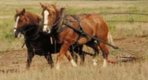
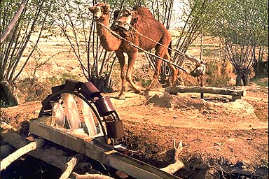
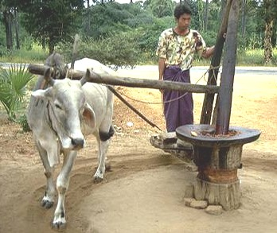
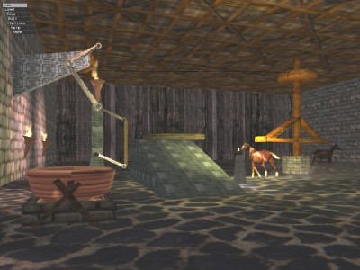
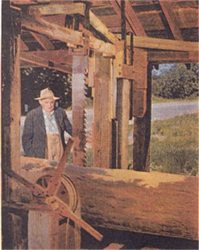
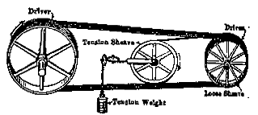
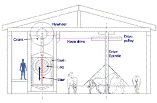
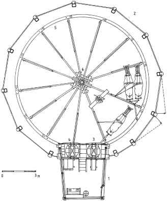
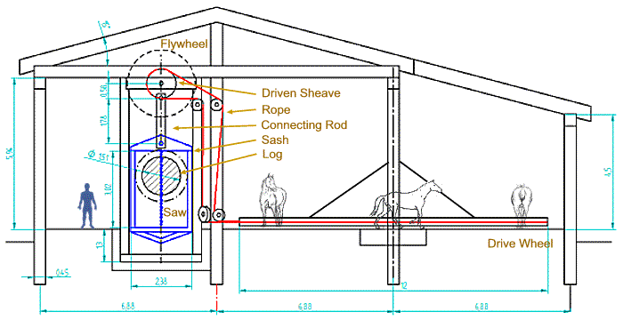
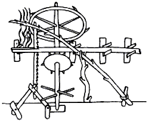

When an animal is used to pull a load it is termed Draft Animal Power. One would expect Noah to have made deliberate use of DAP during the construction and voyage of the ark. Typical applications could include;

The working speed for most draught animals is about 1 metre/second (3.6 km/h, 2 mph). A Brahman bull consumes about 3.3 Joules for each Joule of work. There are limitations on the performance of animals, such as sensitivity to food supply, getting sick or just having a bad day.
| Sustainable power of individual animals in good condition 1 | |||||||
| Animal | Typical weight kN (kgf) | Pull-weight ratio | Typical pull N (kgf) | Typical working speed m/s | Power output W | Working hours per day | Energy output per day MJ |
| Ox | 4.5(450) | 0.11 | 500(50) | 0.9 | 450 | 6 | 10 |
| Buffalo | 5.5 (50) | 0.12 | 650 (65) | 0.8 | 520 | 5 | 9.5 |
| Horse | 4.0 (400) | 0.13 | 500 (50) | 1.0 | 500 | 10 | 18 |
| Donkey | 1.5 (150) | 0.13 | 200 (20) | 1.0 | 200 | 4 | 3 |
| Mule | 3.0 (300) | 0.13 | 400 (40) | 1.0 | 400 | 6 | 8.5 |
| Camel | 5.0 (500) | 0.13 | 650 (65) | 1.0 | 650 | 6 | 14 |
|
Note: For animals of different weight the power output and energy output per day may be adjusted proportionately. Source: Tools for Agriculture, 1992 |
|||||||
| Sustainable power of individual animals in good condition 2 | |||||||
| Animal | Force Exerted (lbs.) |
Velocity (ft/sec) |
Power (ft-lbs/sec) |
Standard Horsepower |
Force Exerted (N.) |
Velocity (m/s) |
Power (W) |
| draft horse | 120 | 3.6 | 432 | 0.864 | 535 | 1.1 | 587 |
| ox | 120 | 2.4 | 288 | 0.576 | 535 | 0.7 | 391 |
| mule | 60 | 3.6 | 216 | 0.432 | 267 | 1.1 | 293 |
| donkey | 30 | 3.6 | 108 | 0.216 | 134 | 1.1 | 147 |
| man | 18 | 2.5 | 45 | 0.090 | 80 | 0.8 | 61 |
For a hard day's work the horse reigns supreme, delivering 500W for 10 hours. The ox is known for its compliance and is less fussy about food - a good choice for the less demanding applications. The camel has the highest power output. Forget the donkey.

(http://geoimages.berkeley.edu/GeoImages/Powell/Afghan/100.html)
Camel powered pump in Afghanistan:For millenia waterwheels have been used to lift water for irrigation and domestic use.
This camel keeps walking in a tight circle to turn an axle which powers the waterwheel.

(http://private.addcom.de/asiaphoto/burma/bdia085.htm)
An ox crushes peanuts on a tiny mill in Thailand. Note the two arms - one steering the animal at the neck, while the other takes the power from behind the animal.
Human Sawing. A saw requires suitable steel - hard but not brittle. Forging (hammering) the metal is better than casting, which is too brittle. Hand sawing required 2 men - the tillerman on top of the log who lifted the saw, and the pitman underneath who pulled on the cutting downstroke. A sawyer team could cut around 200 lineal feet per day (10 hours), but this is no doubt on a good day.
Using animal power for milling timber.

This imaginary scene shows a pair of horses harnessed to a large pulley driving a reciprocating saw. This is actually a trial image from a test of dynamic lighting and animations, so little attention has been paid to the arrangement of the machine. However, the concept is there. James Watt (1736-1819), famous for steam engines and the unit of power, calculated the unit of horsepower from a similar arrangement used in English mines. The horses trod a 24 foot diameter circuit some 144 times per hour, pulling around 180lbs. While a bit optimistic for a full day's output, this figure became the definition of the horsepower (HP), still used today. (Another nice example long lived units of measure).
To mill timber, a reciprocating saw has the simplest blade, a potentially excellent cut and low power consumption. (as compared to the better known circular saw, or the rather "high-tech" band saw). For example a reciprocating 48" gang saw might have 25 to 50 blades and require 225HP, the same power as an 8 ft bandsaw. Of course the bandsaw cuts very fast. (Kent's Mechanical Engineer's Handbook 12 ed, 1964)
The image below is of a water driven reciprocating saw. "The pride and joy of Ernest Ballard, 84, is this rare, water-powered up and down sawmill he erected at his home in Derry, New Hampshire." (There'll Always be Water Wheels; by Neil M. Clark, December 3, 1955.) Note the timber frame (sash) holding the saw blade. It wasn't rare before steam and electricity. With this arrangement, which included an indexing system to move the log on the downstroke, a week's work for two men could be done by a one man in a day. (14 times faster than hand (pit) rip-sawing, and far more accurate).

IMAGE: T.R. Hazen, Pond Lily Mill Restorations: (http://www.angelfire.com/journal/pondlilymill/index.html)
Also contains an excellent links page on on milling and waterpower. (http://www.angelfire.com/journal/millrestoration/links.html)
One difficulty with animal power on a saw like this is the load fluctuation. The animals would be stressed by the constant pulsing of force on the downstroke of the saw. This is offset to a degree by the weight of the saw frame (sash) and can also be minimized by the use of a timber flywheel. With the animals taking a full 25 seconds for one revolution the saw would need to be geared up using a rope drive. An output power of nearly 2kW (2.7HP) could be achieved using 4 horses, which, driving a narrow blade, could give a domestic chain saw a run for its money. (The wider cut of a chain saw requires proportionally more power).
Power transmission from the animal turn-style to the saw crank could be achieved using a rope drive. The following illustration is from the 1964 edition of Kent's Mechanical Engineer's Handbook, which included a chapter on rope drives despite being made obsolete by the introduction of electric motors. In the continuous rope drive, a single loop of rope makes multiple passes in grooved sheaves. In Noah's case, these could be timber. A tension sheave is essential to maintain adequate tension as the rope stretches with use.

Kent's Mechanical Engineer's Handbook, 12 ed, 1964.
A section view of a tentative sawmill layout, using 4 horses and rope drive to an up and down saw.

To provide a higher gear ratio, a large drive wheel must be utilized to keep the driven sheave from becoming too small. The plan below shows a horse driven flour mill in Vamosoroszi, Hungary, built around 1840. The horses walk on the inside of a 12m gear - this diagram shows 3 horses and a seated attendant going along for the ride. The driving wheel has 370 cogs, which mesh with approx 12 cogs on the mill - giving a gear ratio around 30:1. Interestingly, this mill operated until 1948.

IMAGE: Hungarian Open Air Museum. http://www.sznm.hu/engn/index2.html
Applying this concept, the 12m diameter drive wheel now gives the saw a higher cycle rate, which reduces the speed fluctuation. A modest timber flywheel will do the trick here. The other trick is to weight the sash frame sufficiently to aid the downstroke and collect potential energy during the raise - which means the unit would run unevenly when not under load. This could be tweaked using counterweights on the flywheel.

Proposed DAP Reciprocating Saw. Tim Lovett Mar 2004. Refer DAP Saw Calculations below. This saw has a stroke of around 1m - limiting the log diameter to this figure to allow saw teeth to clear. Lumber larger than 1m poses a mass problem anyway and would need to be prepared by hand-sawing to a smaller section. The main purpose of this saw would be production of accurate planking. Of course, Noah could always make a bigger one, assuming he could get wheels to move logs of 10 or more tons.

Villards up-and-down sawmill of the 13th century
Villard de Honnecourt's manuscript (circa 1220s or 1230s) illustrates an up and down sawmill and a method of moving the timber forward. He included this note in his sketchbook: "How to make a saw operate itself." While he could have used some lessons in perspective drawing, this is a long time before the "industrial revolution" but shows the essentials of an automated timber mill.
In the typical water driven up and down saw of the 1800's, a ratchet mechanism advanced the log during the downstroke some 1/4" to 5/8". The early wooden frame design (sash frame or English Gate) provided speeds 160 to 220 strokes per minute, cutting around 500ft of timber per day. There was also a system for sideways movement of the log to set the board thickness. All this moved on a system of timber rails or skids that were later replaced with steel.
In the proposed design, the log carriage is not shown. For an oversize mill, wheel bearings are a problem with heavy loads so rollers could be used to take the weight force, with timber guides for lateral stability. For a standard sized log a simple skidding action would suffice.
Of course, it all seems rather speculative once the details are fleshed out. If Noah was to use labour saving devices wood processing would be the first candidate, and animal or water driven saws the best contenders. Water drive is superior in terms of minimal labour, but the technology looks too "modern" and familiar, despite the use of Roman waterwheels for driving flour mills. As for speculation, there is no choice in a detailed 3D scene - something must be specified. Our rules are simple - no heat engines or precision machine tools, but ample resources and ingenuity.
While the proliferation of dragon legends point to dinosaurs that survived on the ark, it is unlikely these "reptiles" would be much use for DAP. Although it is not known exactly how smart a dinosaur was, if they were anything like a reptile today then it is no candidate for a beast of burden.
Apart from being less intelligent then the average mammal, reptiles prefer to lie still for much of the time, like crocodiles. Perhaps a more land based giant reptile (dinosaur) might offer some improvements, but the dragon reports from Alexander the Great indicate a cave dwelling hermit. Sounds like typical reptilian behaviour - lazy. Explosive efforts maybe, but daily energy output is very low - as evidenced by their low food consumption. (Some, like snakes, can go without food for months)
So for brute force, perhaps the mammoth could be used, for moderate effort the ox, for max daily output - the horse. Perhaps a job for dino-power could be dragging oversize logs through the forest - led by a mouth watering selection of its favourite fruits. Then again, a hundred oxen might be easier to handle than one of these beasts.
WATT'S HORSEPOWER CALCULATION:
The horse travelled 144 / 60 = 180.96 feet per minute.
Energy = force x distance, so the horse output was 180.96 x 180lb = 32580 ft-lbs every
minute.
Power = energy / time, so the rounding off, Watt calculated the Horsepower = 33000
ft-lbs/min.
Of course, everything is much easier in metric.
The horse covers 22.98m every 144 / 3600 = 25 seconds, which is a speed of 0.919
m/s.
Power = force x velocity = 800.7 x 0.919 = 736 Watts.
(The rounded figure gives the standard conversion; 1HP = 745.7 W)
CALCULATIONS FOR PROPOSED
DAP SAW: (metric) Ref Kent's Mechanical Engineer's Handbook
12 ed.
ASSUMPTIONS:
Horse speed = 1 m/s, diameter of horse path = 9m, number of horses = 4, diameter
of drive wheel = 12m..
Ang Velocity of drive wheel: W1 = V / R = 1 / 4.5 = 0.222 rad/s (2.12 RPM)
CHECK ROPE TENSION
Assuming each horse supplies 500W; Total power = 2kW, so torque is 2000 / 0.222 = 9000 Nm
Therefore tension is F = T * r = 9000 / 6 = 1500 N (336 lb)
Since pre-tension must be 50%, the rope tension is doubled; Tmax = 3000N (673 lb)
(Working load for 9/16" or 14.3mm, manila rope is 690lb)
DRIVEN SHEAVE DIAMETER
Check arc of contact on small pulley; T1 / T2 = exp (fcoeff * arcofcontact)
Assume coeff of friction = 0.25 (Manila rope on wood - very conservative)
Then Arc of Contact = 2.77 rads = 158 degs. This is easily achieved, our design
is well over 180 degs.
So select driven diameter based on 40 times rule: Diam = 40 * 14.3 = 571mm. (Kent's
15-82)
(Using 2 cords at smaller diameter would allow a smaller driven sheave).
We will assume a generous 750mm driven pulley.
SASH WEIGHT
Velocity ratio VR = D1 / D2 = 12 / 0.75 = 16
Ang Vel of driven sheave = W1 * VR = 0.222 * 16 = 3.556 rad/s (33.95 RPM, or 1.767
secs/cycle)
Assuming 2 horses (1000W) can lift the sash, Work = Power * time = 1000 * 1.767 / 2 = 883J
Equating to PE = mgh --> m = PE / gh = 883 / (9.8 * 0.56 *2) = 80kg (light but OK).
This gives the upper limit for sash weight at this RPM. It appears we cannot go any
faster without an extra lightweight sash.
Assuming the log advances at 0.4" per stroke, this saw would cut at close to 1
ft/min, or 60ft/hr.
FLYWHEEL
Now do energy balance on the saw upstroke; (KE of flywheel, PE of sash, Work of
horses, no cutting on upstroke.)
PE1 + KE1 + Work = PE2 + KE2
Take PE1 = 0, then PE2 = 883J from above.
Work = Power * time = 2000 * 1.767 / 2 = 1767 J
Now, assume allowable speed fluctuation of 10%; which means kinetic energy varies 21%
(velocity squared)
KE1 + W = 1.21 * KE1 + PE2
So KE2 = ( W - PE2 ) / 0.21 = 4207 J
Need a flywheel to store this energy at 3.556 rad/s;
Energy = 0.5 * Inertia * angvel ^ 2
Inertia = 665.6 kgm2
Assuming a timber disc 0.3m thick and density 600 kg/m2 gives a disc radius of 1.24m.
(diameter 2.5m)
So did Noah have to do these calculations?. NO. Engineers usually do calculations so they don't have to arrive at a design by trial and error (or at least get there quicker anyway). In this design, the Sash geometry is common sense and the drive wheel diameter dictated by the size of a horse, leaving the diameter of the driven sheave as the only real variable to play with. The flywheel is optional and could be an afterthought.
1.(http://www.fao.org/sd/EGdirect/EGan0006.htm) Return to text
2. (http://www2.sjsu.edu/faculty/watkins/animalpower.htm) Metric conversion by Tim Lovett Return to text